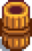
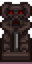

Template:Recipe
Jump to navigation
Jump to search
Description
This template overlays a recipe icon over an image. The background image will be rendered semi-transparent.
Parameters
| Parameter | Notes |
|---|---|
| First (unnamed) parameter | Name of background image (without extension such as .png) |
| Second (unnamed) parameter | Desired display width of background image (do not include "px") Valid values: 48, 36, 32, 24 (other values will be accepted, but may produce undesired results) Default value: 24 |
| Third (unnamed) parameter | center, if the image is to be displayed in a table cell. Adding this parameter will center the image in the cell. |
Examples
| Template Call | Result |
|---|---|
{{Recipe|Bread}}
|
|
{{Recipe|Complete Breakfast|48}}
|
|
{{Recipe|Barrel Brazier|36|center}}
|
 |
{{Recipe|Wicked Statue|32|center}}
|
 |